AI로 다시 만든 소프트웨어, 그리고 SolidCraft
발표자는 SolidCraft 이야기를 하기 전에 최근 소프트웨어 쪽에서 화제가 된 REA(Reverse Engineer Anything)부터 꺼내요. REA는 오픈소스 AI 리버스 엔지니어링 도구로 소개돼요. 앱이나 웹사이트를 넣고 "이거 만들어 줘" 하면, 소스 코드를 몰라도 동작을 분석해 비슷한 프로그램을 만들어 준다는 거예요.
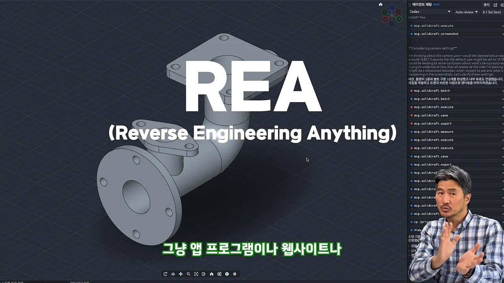
그렇게 해서 구독형 디자인 프로그램을 대신하는 무료 앱이 쏟아졌다는 소식도 함께 전해요. 아래 화면의 왼쪽이 원래 프로그램, 오른쪽이 새로 나온 앱이에요. Premiere Pro는 FilmCraft, Lightroom은 LightCraft, Acrobat Pro는 PdfCraft, After Effects는 EffectCraft처럼 이름이 짝지어져 있어요.
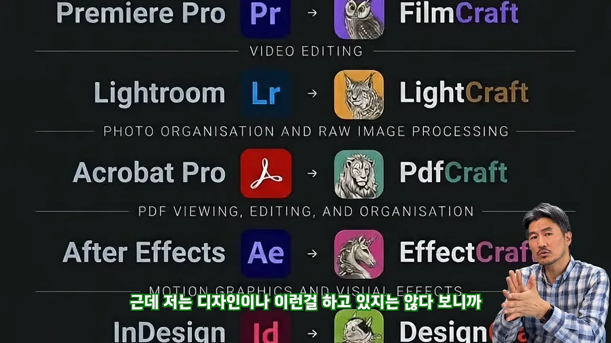
3D 프린팅 쪽에서 같은 방식으로 나온 게 SolidCraft예요. 영상 속 소개 화면에는 'Open-source parametric CAD built in Rust'라고 적혀 있어요. Rust로 만든 오픈소스 파라메트릭 CAD라는 뜻이고, 데스크톱·브라우저·AI 에이전트용 MCP를 지원한다고 나와요. 발표자가 직접 써 보고 놀란 이유는 오토데스크 퓨전과 너무 닮아서였어요. 인터페이스가 거의 같고, 퓨전에서 하던 방식 그대로 모델링해도 새로 배울 게 없었다고 해요. 그래서 이번 영상은 퓨전과 비교하고, 직접 모델링해 보고, AI에 연결해 보고, 한계와 추천 대상을 정리하는 순서로 가요.
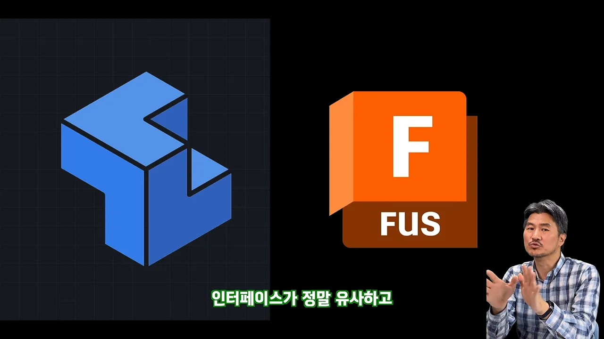
퓨전과 얼마나 닮았나요
발표자는 왼쪽에 SolidCraft, 오른쪽에 퓨전을 띄워 놓고 하나씩 맞대 봐요. 처음 열었을 때부터 화면 구성이 거의 같아서, 언뜻 보면 퓨전에 스킨만 바꾼 것 같다고 해요.
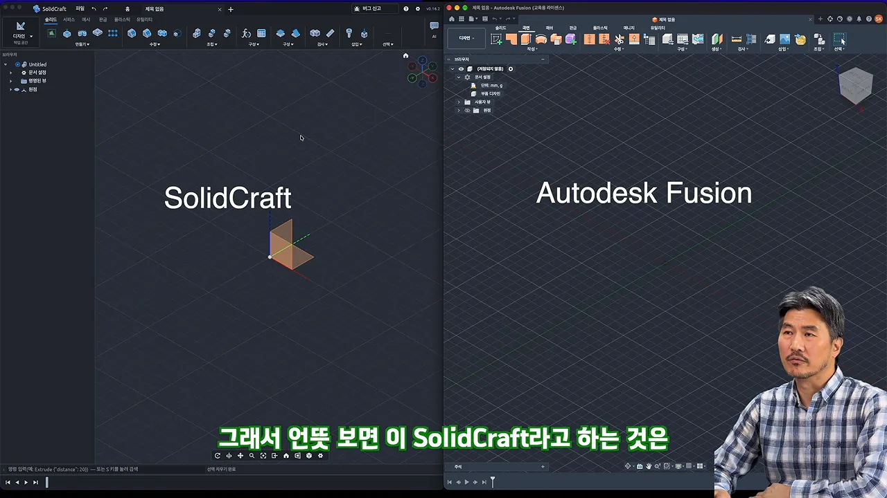
왼쪽 위 '디자인' 버튼을 누르면 작업 공간 목록이 떠요. SolidCraft에도 디자인·렌더·애니메이션·시뮬레이션·제조·도면이 퓨전과 같은 순서로 있어요. 지금은 디자인과 렌더만 켜져 있고, 나머지 넷은 회색 글씨로 '추후 지원 예정'이라고 적혀 있어요. 도구막대 위 탭도 솔리드·서피스·메시·판금·플라스틱·유틸리티로, 오른쪽 퓨전의 솔리드·곡면·메시·판금·플라스틱·유틸리티와 짝이 맞아요.
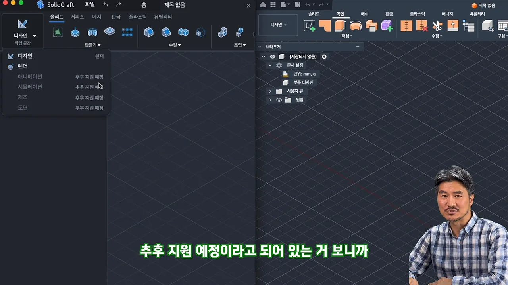
발표자가 퓨전을 쓰는 가장 큰 이유로 꼽는 건 아래쪽 타임라인 히스토리예요. 작업 순서가 기록돼 있어서 앞 단계로 돌아가 고칠 수 있거든요. 아래 화면에서 빨간 상자로 표시한 부분이 두 프로그램의 타임라인이에요. SolidCraft에도 같은 자리에 같은 모양으로 있어요.
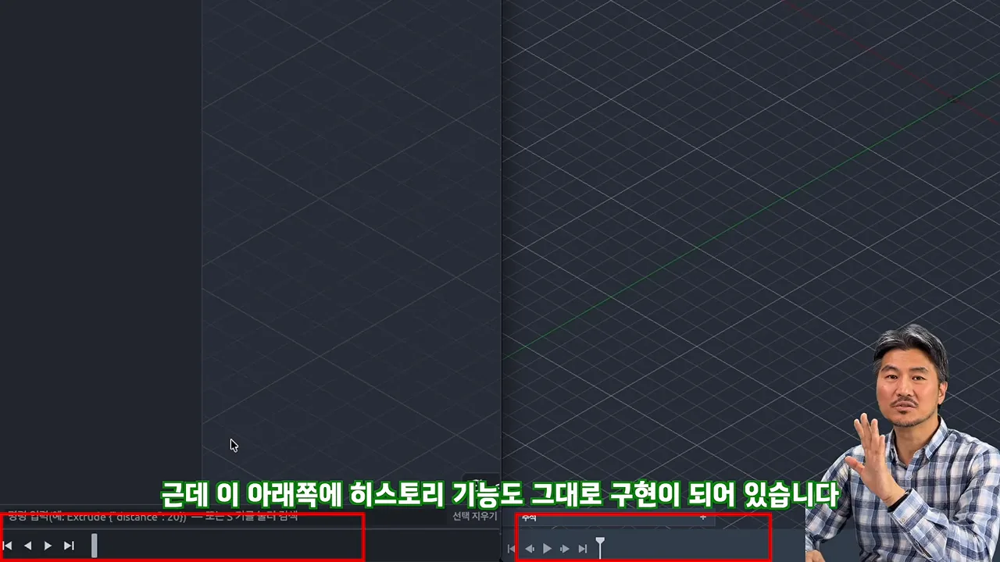
영상에서 짚은 공통점과 차이를 모으면 이래요.
| 비교한 곳 | SolidCraft | 퓨전 |
|---|---|---|
| 작업 공간 | 디자인·렌더만 사용 가능, 나머지는 추후 지원 예정 | 디자인·렌더링·애니메이션·시뮬레이션·제조·도면 |
| 디자인 하위 탭 | 솔리드·서피스·메시·판금 | 솔리드·곡면·메시·판금·플라스틱 |
| 메뉴 | 만들기·수정 | 작성·수정 |
| 타임라인 히스토리 | 있음 | 있음 |
| 왼쪽 브라우저 | 문서 설정·명명된 뷰·원점 | 같은 구조 |
| 뷰큐브 | 모양이 조금 다름 | 기본 뷰큐브 |
| 기본 단축키 | 같음 | 같음 |
발표자는 기능의 90% 이상이 같다고 느꼈어요. CAD는 결국 다 비슷해 보여도, 손에 익은 툴을 떠나기 어려운 건 메뉴 위치와 설정이 달라서예요. 앞서 영상으로 다룬 FreeCAD는 기능이 어디 있는지 몰라 헤맸어요. 그때는 AI로 모델링이 된다는 걸 보여 준 거지, 손으로 하나하나 만들기는 어려웠다고 해요. SolidCraft는 퓨전을 옮겨 놓은 수준이라 바로 적응했어요.
2D 스케치에 두께를 주면 3D가 돼요
누가 3D 모델링이 뭐냐고 물으면 발표자는 "2D 더하기 두께 주기"라고 답해요. 평면에 2D 스케치를 그리고, 거기에 두께만 주면 3D가 된다는 뜻이에요. 3D 프린팅을 시작하면 처음엔 Thingiverse나 MakerWorld에서 받은 파일을 출력하지만, 어느 정도 지나면 꼭 모델링을 배우라고 권해요. 모델링을 할 줄 아느냐에 따라 3D 프린팅의 재미가 확 달라진다고요.
퓨전이 이 개념에 잘 맞게 만들어진 툴인데, SolidCraft도 같아요. 도구막대 앞쪽에 스케치가 있고, 그다음이 돌출(Extrude)이에요.
스케치와 구속
스케치를 누르고 평면을 고르면 스케치 화면으로 바뀌어요. 이 화면도 퓨전과 거의 같아요. 선 도구로 점을 이어 가며 원하는 모양을 그려요. 아래 화면에서 가운데 꺾인 선이 그리는 중인 스케치예요.
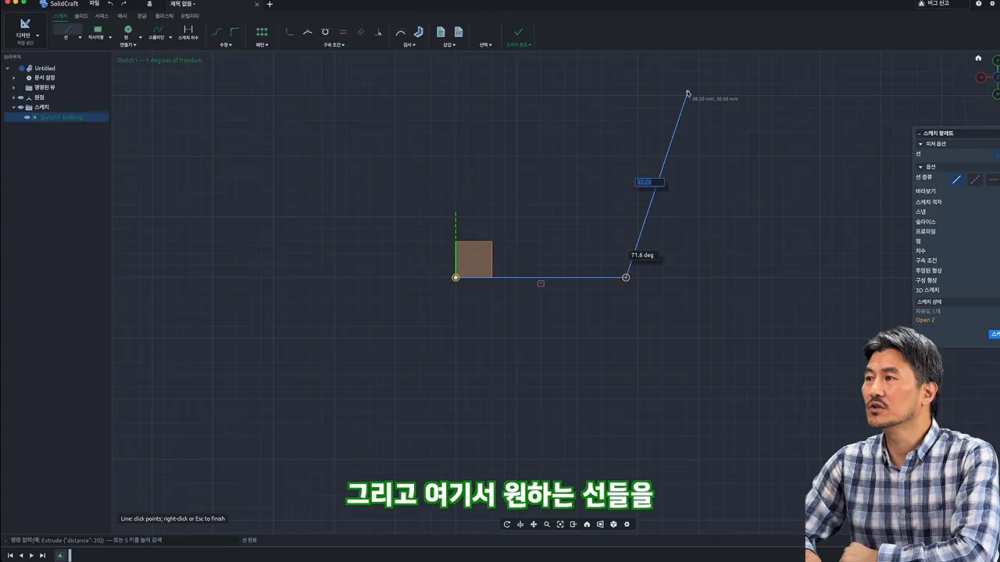
발표자는 설계 툴에 꼭 있어야 할 기능으로 구속(Constraint)을 꼽아요. 수직·수평 구속을 클릭 몇 번으로 걸 수 있고, 이것도 퓨전과 똑같이 만들어져 있어요. 아래는 선을 다 이어 사다리꼴 모양의 닫힌 스케치를 만든 뒤 구속을 거는 장면이에요.
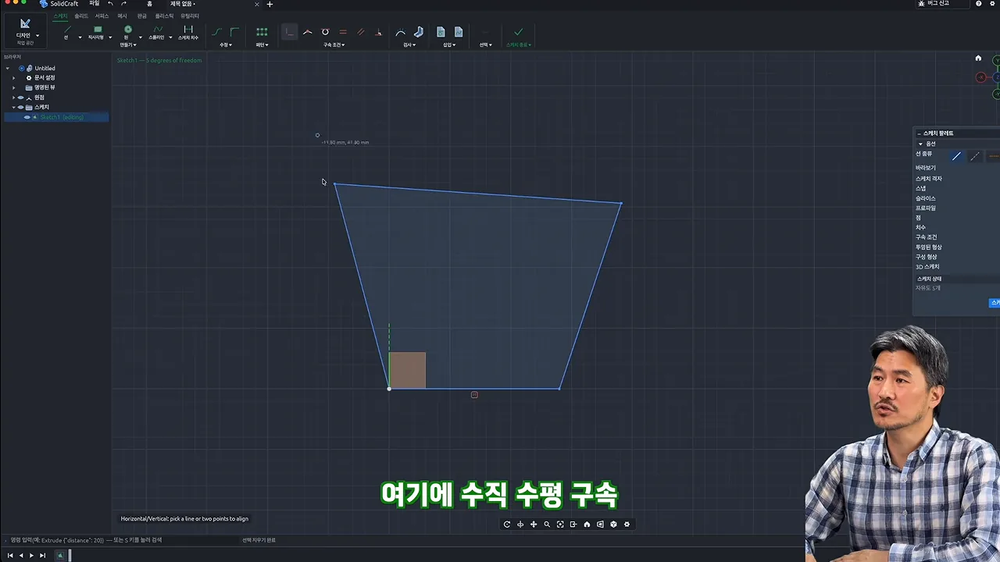
돌출과 다듬기
스케치를 끝내고 돌출을 고르면 오른쪽에 돌출 패널이 떠요. 단축키도 퓨전과 같은 E예요. 거리 칸에 값을 넣고 확인을 누르면 스케치가 그대로 위로 솟아 입체가 돼요. 아래 화면에서는 거리가 43mm로 들어가 있어요.
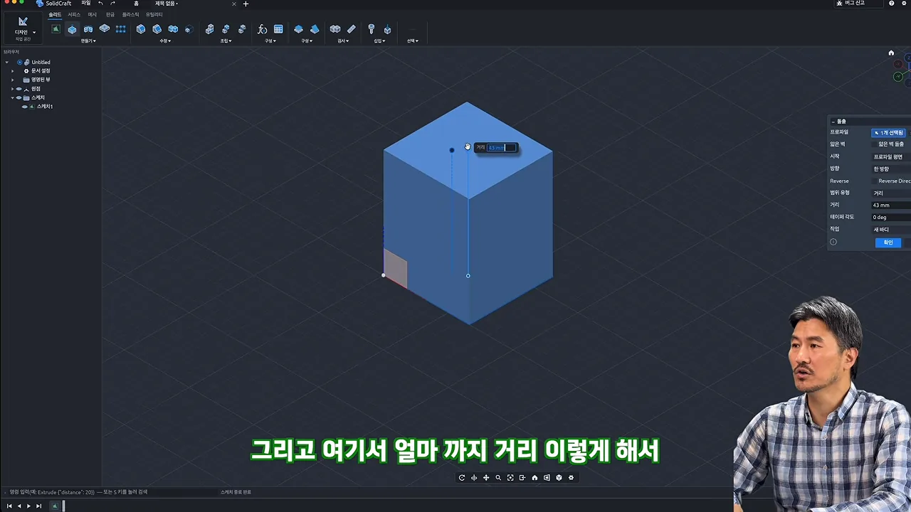
만든 덩어리의 모서리는 필렛으로 둥글게, 챔퍼로 비스듬히 깎을 수 있어요. 아래 화면에서 윗면 양쪽이 지붕처럼 비스듬한 건 챔퍼를 넣은 결과예요.
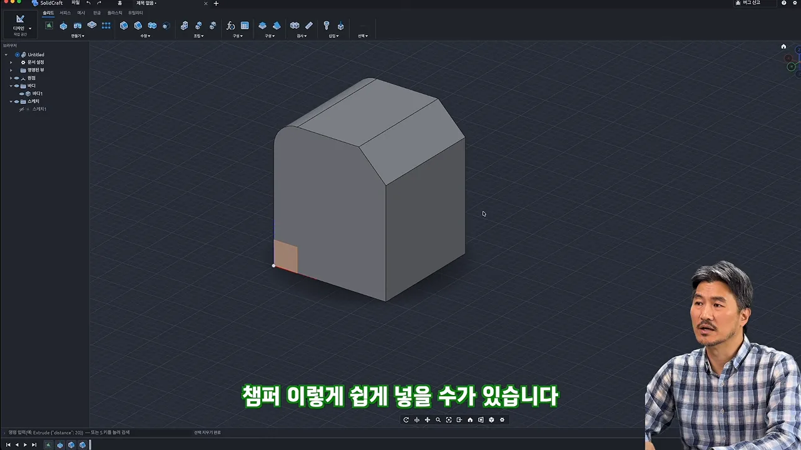
이어서 앞면을 선택하고 쉘을 쓰면, 그 면을 열어 두고 속을 일정한 벽 두께만 남기고 비워요. 아래 화면에서 파랗게 선택된 앞면이 열리고, 위쪽으로 벽 단면이 보여요.
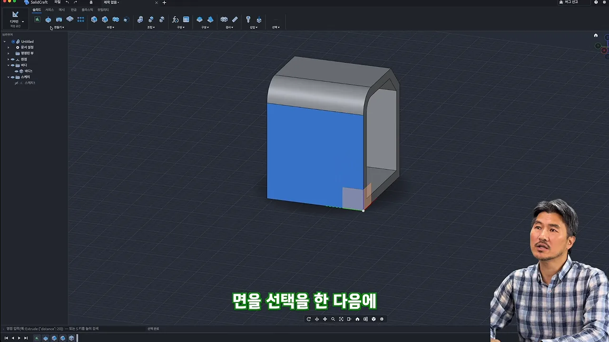
구멍은 옆면에 원을 스케치하고 다시 돌출로 뚫어요. 이때 범위를 '거리'가 아니라 '객체까지'로 바꾸고 뒤쪽 면을 고르면 반대편까지 그대로 뚫려요. 이것도 퓨전에 있는 기능을 거의 그대로 가져왔어요.
텍스트 음각
윗면에 텍스트 도구로 'Bookledge'(채널 이름)를 넣어요. 클릭해서 마우스로 옮기고 각도도 돌릴 수 있어요. 발표자는 여기서 퓨전보다 낫다고 느꼈어요. 퓨전은 높이 값으로만 글자 크기를 바꿀 수 있었는데, SolidCraft는 글자 상자를 잡고 끌면 크기가 늘어나요. 아래 화면은 글자를 키워 윗면 가운데에 놓은 모습이에요.
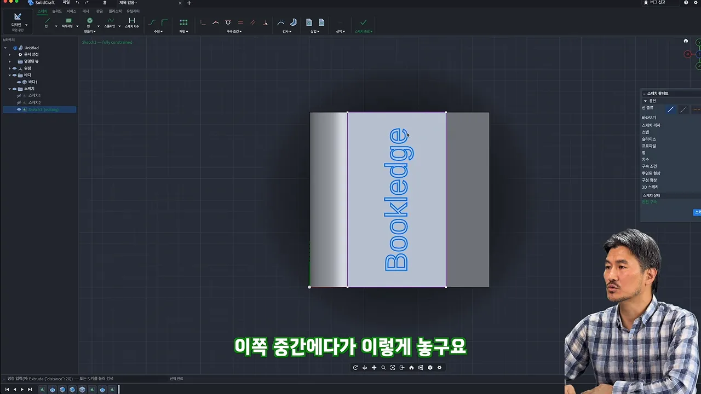
스케치를 끝내고 돌출 값을 -0.5 정도로 주면 글자가 안으로 파여 음각이 돼요. 완성된 부품을 보면 위의 챔퍼, 옆의 구멍, 비운 속, 윗면 글자가 한 번에 보여요.
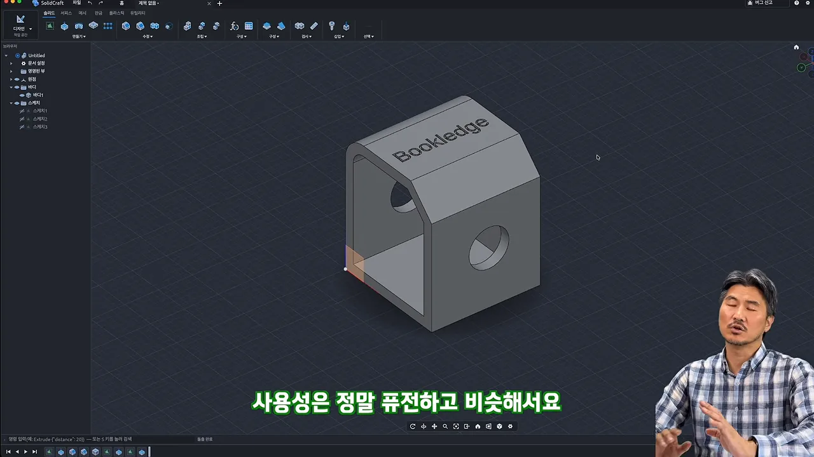
다만 아직 안 되는 기능도 가끔 있다고 덧붙이고, 그건 뒤의 '한계' 부분에서 다시 다뤄요.
설치와 FreeCAD와의 차이
설치는 홈페이지에서 시작해요. 홈페이지는 SolidCraft로 할 수 있는 일을 쭉 소개해요. 아래 화면에는 부품을 엮어 움직임을 정하는 조인트(Components and joints), 판금과 플라스틱 부품(Sheet metal and plastic parts), 지원하는 파일 형식(Supported file formats)이 차례로 보여요.
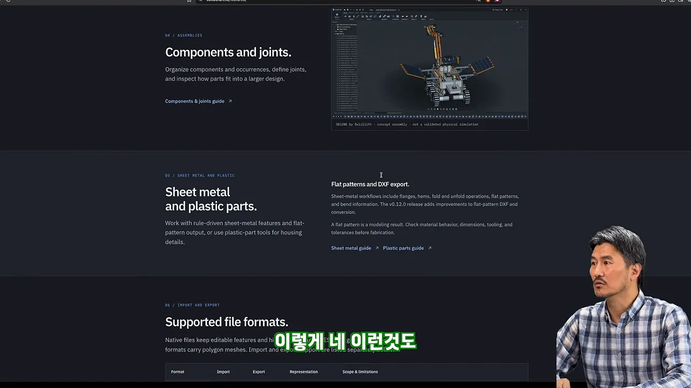
설치 파일은 GitHub 릴리스 페이지에서 무료로 받아요. 왼쪽 'Release list' 맨 위가 최신 버전이고, 촬영 시점에는 3시간 전에 올라온 0.16.2였어요. 그 아래 Assets 목록에서 내 운영체제에 맞는 파일을 골라 설치하면 돼요.
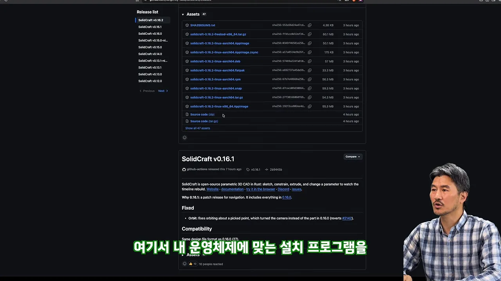
FreeCAD와 무엇이 다를까요
발표자가 2주쯤 전에 소개한 FreeCAD도 오픈소스 모델링 툴이에요. 찾아보니 FreeCAD는 역사가 20년이 넘었고, 그동안 조금씩 다듬어져 지금은 꽤 쓸 만해졌어요. SolidCraft는 나온 지 13일 정도밖에 안 됐어요.
둘의 차이를 AI에게 물어보니 명령을 전달하는 방식이 다르다는 답이 나왔어요. 아래 슬라이드 왼쪽 FreeCAD는 Python 코드로 직접 제어해요. 코드가 API(Application Programming Interface)를 실행해 3D 모델을 만들고, 조건이나 반복까지 자유롭게 쓸 수 있어요. 오른쪽 SolidCraft는 JSON으로 '명령 + 매개변수'를 넘기고, 명령 엔진이 그걸 실행해 3D 모델을 만들어요. 정해진 명령 형식으로 요청하는 방식이에요.
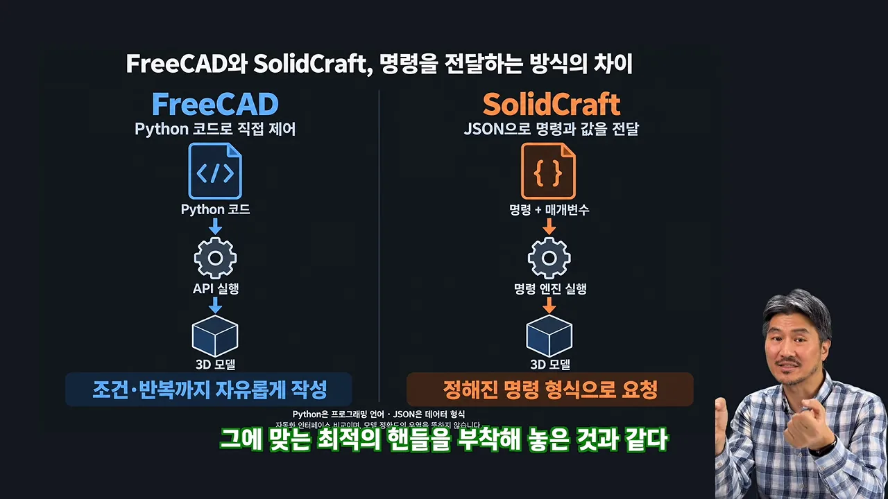
발표자도 처음엔 이 차이가 잘 와닿지 않았다고 해요. 하지만 이 방식이 AI 시대에는 강점이 된다는 설명이 많았어요. FreeCAD는 오랫동안 쌓인 프로그램에 AI를 붙인 것이고, SolidCraft는 처음부터 AI가 다루기 좋게 짧은 시간에 만들어졌다는 거예요. 둘 다 MCP로 AI 모델링이 되지만, 이런 비유가 있었어요.
| FreeCAD | SolidCraft | |
|---|---|---|
| 역사 | 20년 넘게 점진적으로 개발 | 나온 지 약 13일 |
| 모델을 다루는 방식 | Python 코드로 직접 제어 | JSON으로 명령과 값 전달 |
| 영상 속 비유 | 오래된 클래식 자동차에 최신 핸들을 단 것 | 최신 전기차에 그에 맞는 최적의 핸들을 단 것 |
JSON 형식이라 AI가 그 언어로 바로 작업을 지시하고 모델을 만들 수 있어서, SolidCraft를 'AI 네이티브'라고 부르는 표현까지 나와요. 발표자는 이 영상에서 SolidCraft가 정말 AI로 모델링이 잘되는지에 초점을 맞췄어요.
Codex에 MCP로 연결해 말과 도면으로 모델링하기
SolidCraft를 설치한 뒤, 발표자는 MCP로 AI에 연결하는 방법을 AI에게 물었어요. 쓰고 있는 ChatGPT Codex가 터미널에서 실행할 내용을 길게 알려 줬어요. 아래 화면의 1번은 SolidCraft를 원격 제어 모드(--control 7878)로 실행하는 명령, 2번은 Codex 설정 파일 ~/.codex/config.toml에 MCP 서버를 덧붙이는 내용이에요.
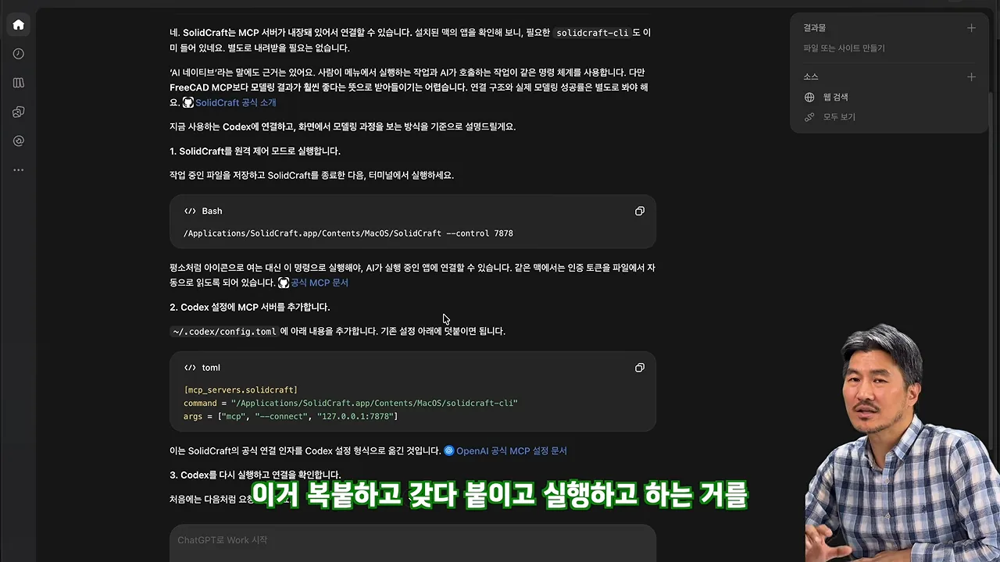
FreeCAD 영상 때는 이걸 발표자가 직접 복사해 붙이고 실행했어요. 그러자 "그걸 왜 네가 하느냐, AI한테 시키면 되지 않느냐"는 댓글이 달렸어요. 그래서 이번에는 "위 진행 작업을 네가 대신 해 줄 수 있지?"라고만 물었어요. Codex는 권한을 요청했고, 허용만 눌러 주자 터미널 작업을 알아서 했어요. 아래 화면처럼 50초 만에 연결이 끝났어요.
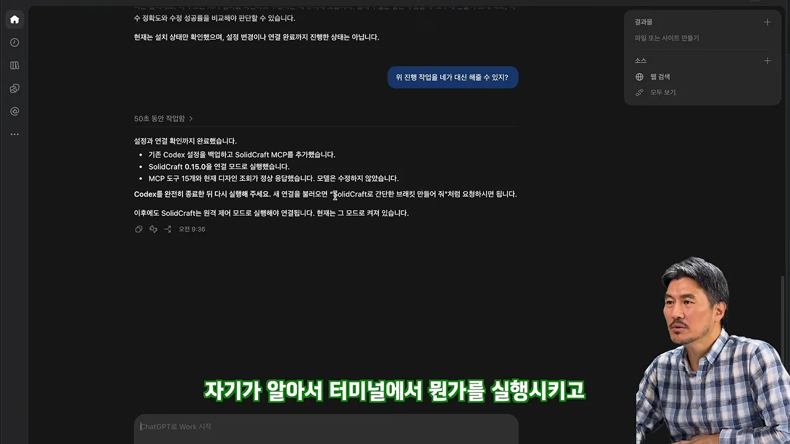
발표자는 Codex를 쓸 뿐이고, Gemini나 Claude 같은 다른 AI로도 같은 방식으로 할 수 있다고 말해요. 연결 구조를 그림으로 정리하면 이래요.
flowchart LR U["발표자
말·도면 사진"] --> C["AI 에이전트
(Codex)"] C -->|"MCP"| S["SolidCraft
원격 제어 모드"] S -->|"모델·렌더 이미지"| C C -->|"권한 요청"| U
말 한마디로 브래킷
연결이 끝나고 "간단한 브래킷 만들어 줘"라고 한마디 했어요. 중간중간 권한 요청이 왔고, 처음이라 그런가 보다 하고 허용했어요. 30초쯤 뒤 아래와 같은 L자 브래킷이 나왔어요. 왼쪽 Codex 답변에 외형 40 × 30 × 40mm, 두께 4mm, 양쪽 면에 지름 5mm 구멍 1개씩이라고 적혀 있어요.
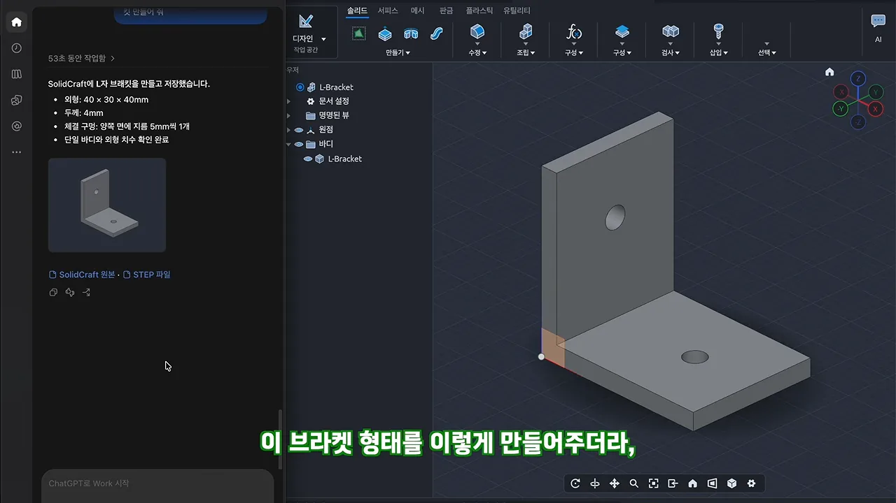
자격증 실기 도면으로 모델링하기
다음은 FreeCAD 때와 같은 3D프린터운용기능사 실기 도면이에요. 아래 도면은 ①, ② 두 부품이 맞물리는 구조예요. 이걸 올리고 "새 디자인으로 이 도면을 그대로 만들어 줘"라고 했어요.
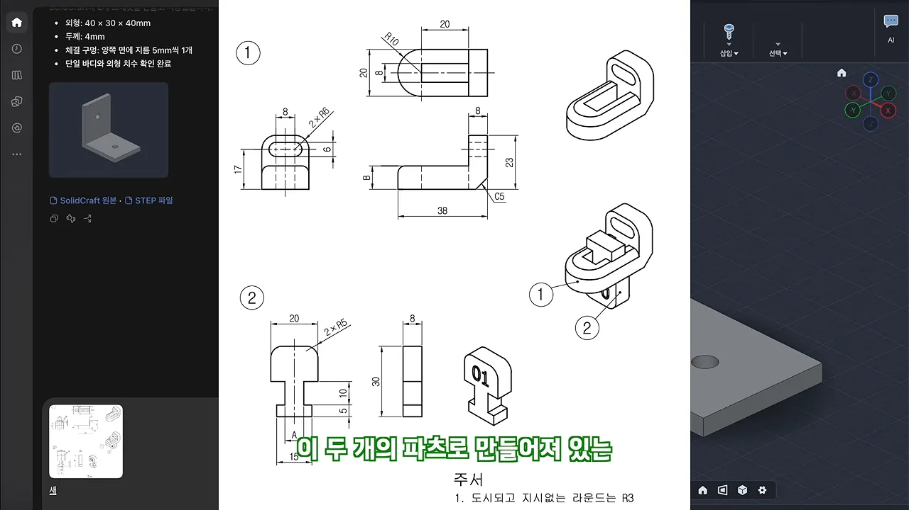
AI는 혼자 작업하면서 "이것도 허용하시겠습니까?"를 계속 물었어요. 허용할 때마다 SolidCraft 창에서 모델이 조금씩 만들어지는 게 보였어요. 두 부품 사이 공차를 추가해 달라고 하자 반영했고, 이어서 비번호 각인을 요청했어요. 아래 화면 왼쪽 위 요청이 "두 번째 파츠의 전면에 도면과 같은 방향으로 숫자 55를 각인해 줘"예요. AI는 깊이 0.3mm로 55를 새기겠다고 답해요. 왼쪽 브라우저 맨 위 파일 이름에는 'gap0.4-each-side'가 붙어 있어 양쪽 0.4mm 간격이 들어간 걸 알 수 있어요.
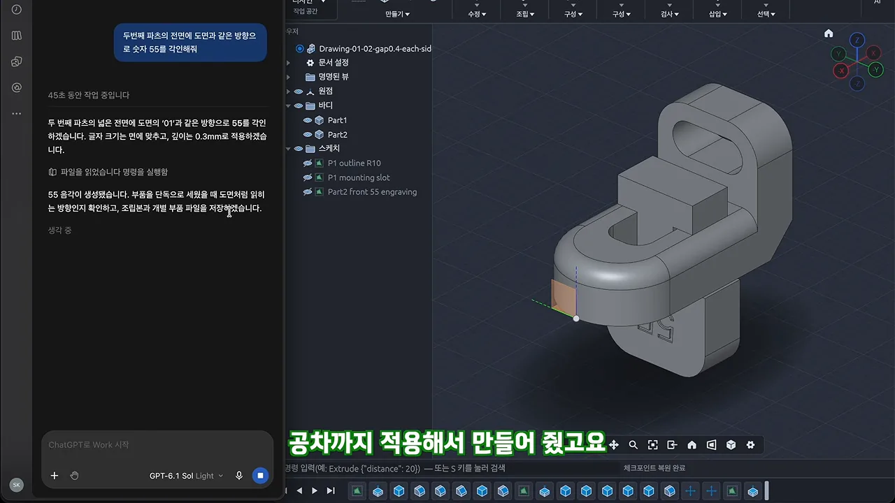
색까지 정해서 렌더링 이미지로 만들어 달라고 하자, 아래처럼 빨간 부품과 노란 부품으로 나눠 이미지를 내보냈어요. 노란 부품 앞면에 55가 새겨져 있어요.
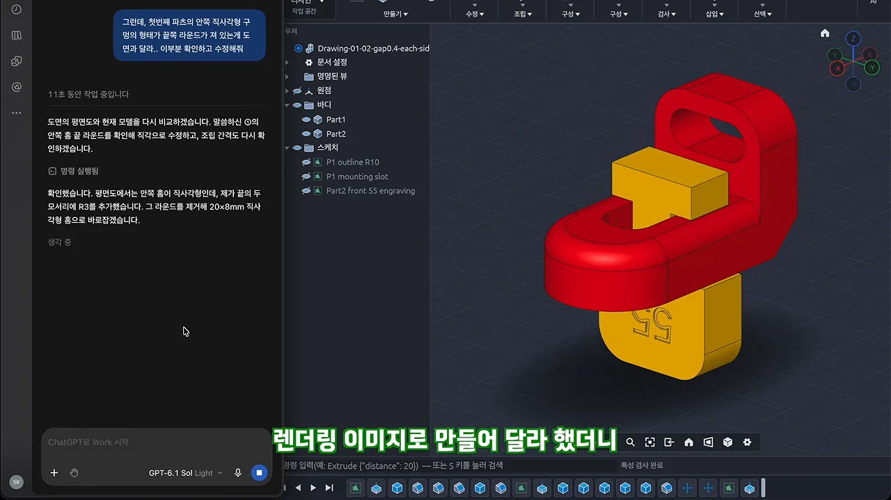
마지막으로 발표자는 퓨전에서 최종 검토할 때 즐겨 쓰던 단면 분석을 SolidCraft에서 써 봤어요. 모델을 잘라 속을 보여 주는 기능인데, 아래처럼 잘 동작했어요. 이 화면에서는 왼쪽에 또 다른 수정 요청도 보여요. 첫 부품의 안쪽 구멍 끝이 둥글게 된 게 도면과 다르다고 하자, AI가 잘못 넣은 R3 둥글기를 빼고 20 × 8mm 직사각형 구멍으로 고쳤어요.
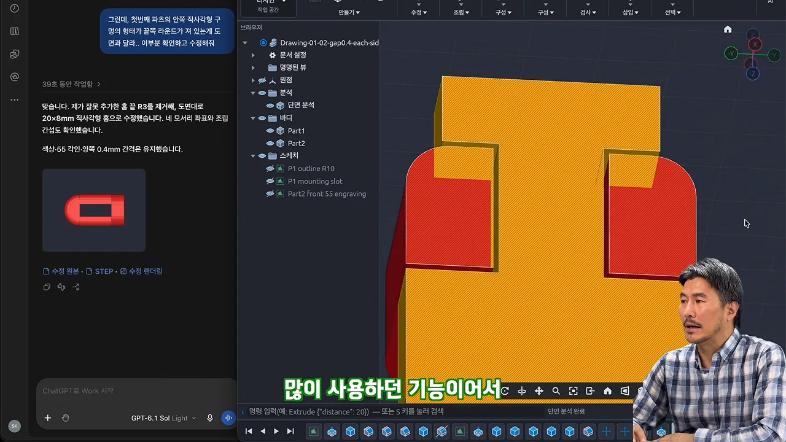
반복되는 권한 요청 줄이기
새 도면을 계속 시키는데, 중간마다 권한을 묻는 게 갈수록 거슬렸어요. "끝날 때까지 묻지 말고 알아서 해"라고 해도 틈만 나면 아래 같은 창이 떴어요.
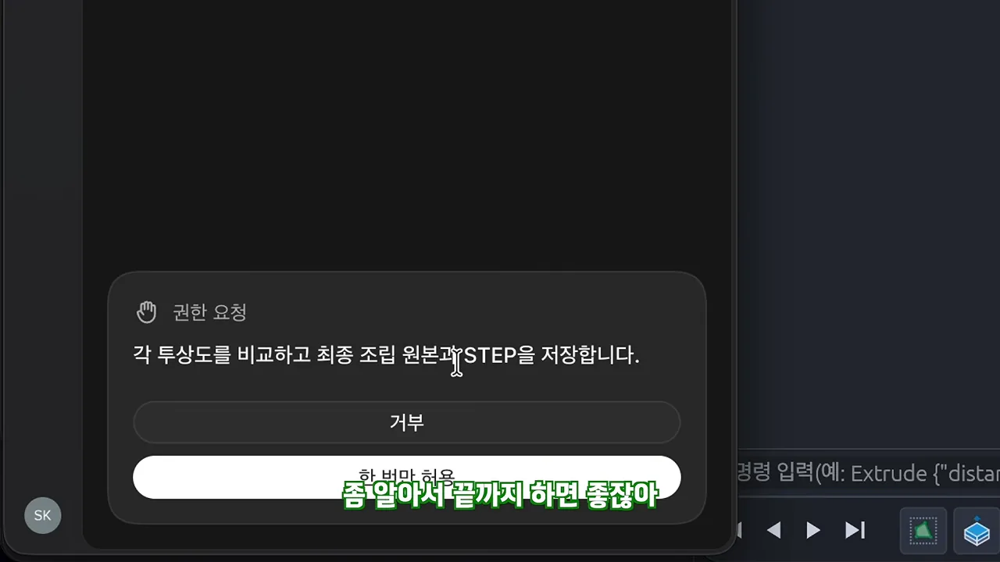
짜증이 나서 왜 자꾸 묻느냐고 따졌어요. 아래 화면의 답을 보면, 이 질문은 AI가 아니라 실행 환경이 강제하는 승인 창이라 AI가 끌 수 없다고 해요. 반복을 없애려면 SolidCraft 연결 실행에 대한 지속 허용 규칙이 필요하다고 안내했어요.
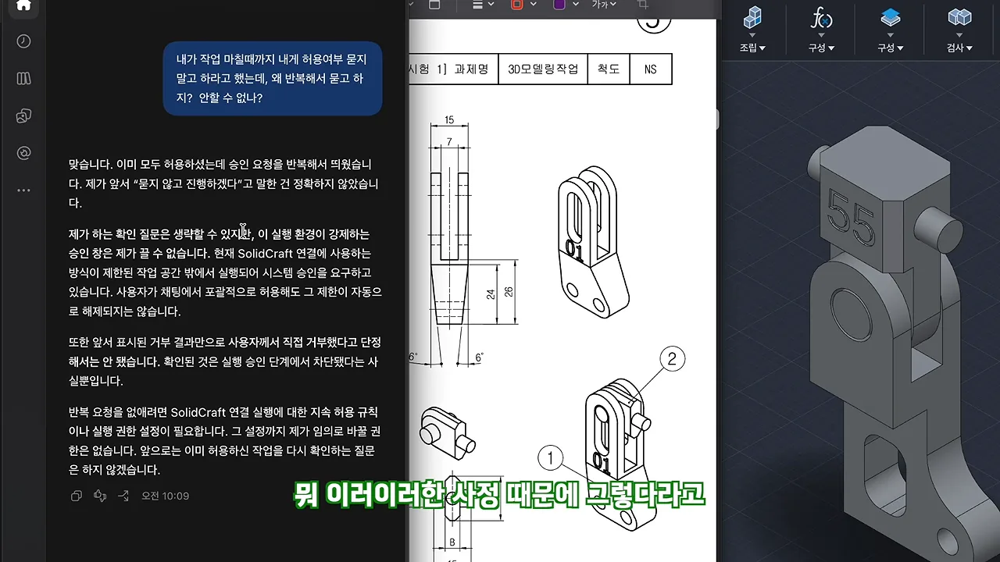
발표자는 이 절차도 직접 하지 않고 "네가 위 과정을 진행해 줘"라고 맡겼어요. 그 뒤로는 모델링 작업에 권한 요청이 없어졌어요. 도면을 넣으면 바로 진행되니 시간도 줄었어요.
도면 27장을 한꺼번에
욕심이 나서 도면 사진 세 장을 캡처해 올리고 연달아 만들어 달라고 했더니 모두 해냈어요. 내친김에 실기 공개 문제 PDF(Portable Document Format) 도면 27장을 통째로 올렸어요. 20분 남짓 만에 전부 모델로 만들고, 완성 이미지를 한 장으로 모아 정리해 줬어요. 아래 오른쪽이 그 정리 이미지이고, 왼쪽이 원본 PDF 도면이에요.
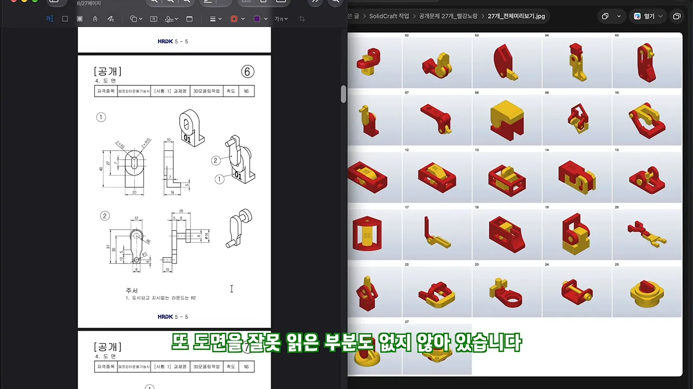
SolidCraft 안의 AI 창
여기까지 하고 보니 Codex 창을 따로 띄울 필요도 없었어요. SolidCraft 오른쪽 위에 'AI' 버튼이 있고, 누르면 '에이전트 채팅' 창이 열려요. 이미 쓰고 있는 AI 에이전트를 여기에 연결하면, 아래 입력창에 타이핑만 해도 모델링이 된다는 거예요.
처음 열면 연결할 에이전트를 찾지 못했다며 설치 방법 목록을 보여 줘요. 아래 화면에 Claude Code, Codex, Google Antigravity, OpenCode, xAI Grok, GitHub Copilot CLI, Qwen Code, goose가 있고, 각각 옆에 설치 명령과 '복사' 버튼이 있어요. 발표자는 Codex 줄의 명령을 복사해 터미널에서 실행했어요.
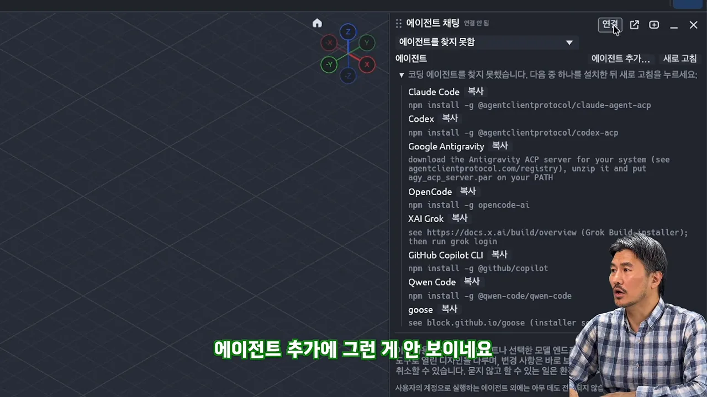
npm install -g @agentclientprotocol/codex-acp예요. 명령을 실행해도 바로 안 보이면 창 오른쪽 위 '새로 고침'을 누르면 돼요.
영상 19:33에서 보기
실행했는데도 에이전트가 안 보여서 잠시 헤맸어요. 오른쪽의 '새로 고침'을 누르자 방금 설치한 Codex가 목록에 나타났어요.
정육면체, 주사위, 도면 사진
먼저 "한 변이 20mm인 정육면체를 만들어 줘"라고 해 봤어요. 처음이라 그런지 실패 표시가 몇 번 뜨다가 갑자기 정육면체가 만들어졌어요. 이어서 "1부터 6까지 숫자를 넣은 주사위"를 요청했어요. 아래 화면 오른쪽 창에 AI가 부른 MCP 도구가 줄줄이 보여요. inspect_design, list_commands, execute, batch, screenshot 순서예요. 빨간 점은 실패, 파란 점은 완료예요.
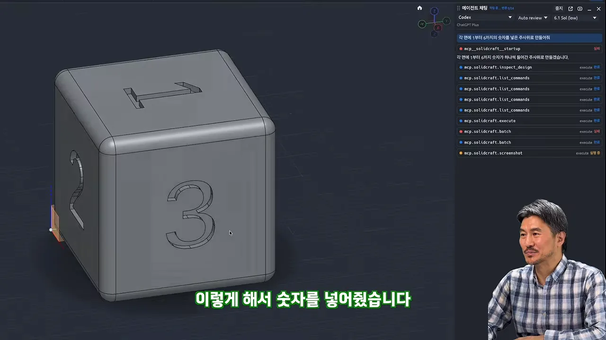
다른 데 가지 않고 SolidCraft 안에서 말로 모델링하는 시대가 왔다고 느꼈대요. 그다음은 도면이에요. 입력창 옆 '+'를 누르면 사진을 붙일 수 있어요. 클립보드에 복사해 둔 도면 사진을 넣고 "이 도면을 그대로 3D 모델링해 줘"라고 했어요. AI를 부르는 통로만 바뀌었을 뿐 Codex에서 하던 것과 같으니 같은 결과가 나와야 하고, 실제로 그랬어요.
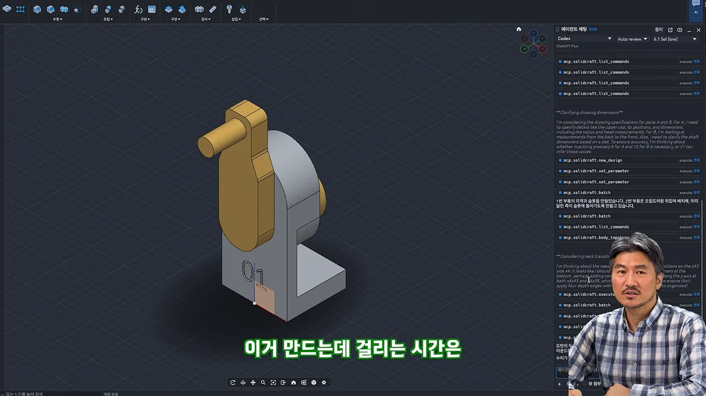
연결한 모델은 GPT-6.1 Sol이었어요. 창 위쪽에 '6.1 Sol (low)'라고 나오듯, 그중 가장 낮은 설정이었는데도 1분 정도면 모델이 나왔어요.
flowchart LR
subgraph A["방법 1 · 외부 에이전트 창"]
A1["Codex 앱"] -->|"MCP 설정"| A2["SolidCraft"]
end
subgraph B["방법 2 · SolidCraft 안의 AI 창"]
B1["에이전트 채팅"] --> B2["Codex 연결"] --> B3["같은 MCP 도구"]
end
직접 써 보며 찾은 한계
시연을 마치고 발표자는 한계와 가능성을 함께 정리해요. 영상 화면에는 한계 세 가지가 차례로 큰 제목으로 떠요.
하나, 버그가 많아요
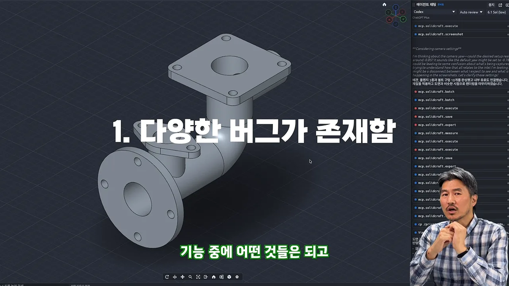
퓨전에 익숙한 사람일수록 이런 데서 자주 걸려요. 발표자가 찾은 예는 곡면 위 글자예요. 리볼브나 로프트로 만든 꽃병의 둥근 벽에 같은 높이·두께로 글자를 새기려 하면, 튀어나오게(양각) 해도 파이게(음각) 해도 아직 안 돼요. 아래 화면이 그 시도예요. 파란 꽃병 옆에 글자가 면을 따라 붙지 못하고 떠 있어요.
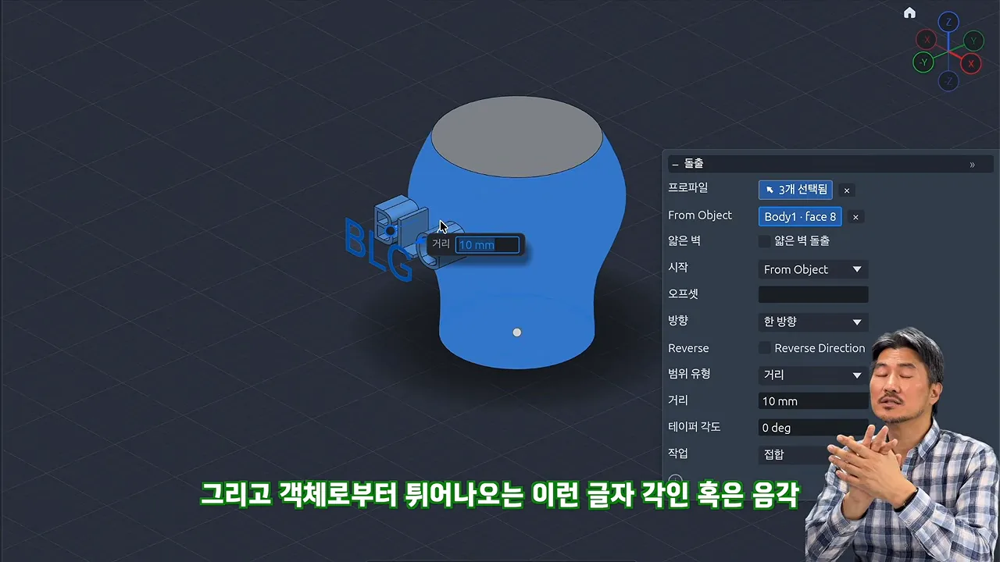
쉘도 비슷해요. 각진 형태에서는 잘 되지만, 곡면 형태에서는 아직 안 돼요. 그 밖에도 자잘한 버그가 여럿 있어요.
둘, 아직 덜 만들어졌어요
생긴 지 2주가 안 된 프로그램이라 개발이 다 끝난 게 아니에요. 솔리드 탭은 잘 갖춰져 있지만, 서피스 탭으로 가면 만들기·수정·조립·구성·검사 메뉴가 자리만 있어요. 아래처럼 조립을 눌러 보면 'Not available yet'만 떠요.
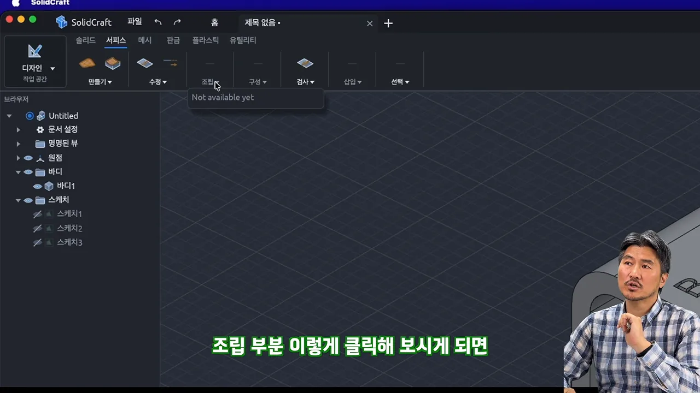
메시 탭도 마찬가지예요. 판금은 꽤 많이 돼 있어요. 퓨전에서 여러 기능을 섞어 복잡하게 모델링하는 사람에게는 아직 맞지 않을 수 있고, 그런 사람은 퓨전을 계속 쓰는 게 맞다고 해요.
셋, 개발자 한 명이 끌고 가요
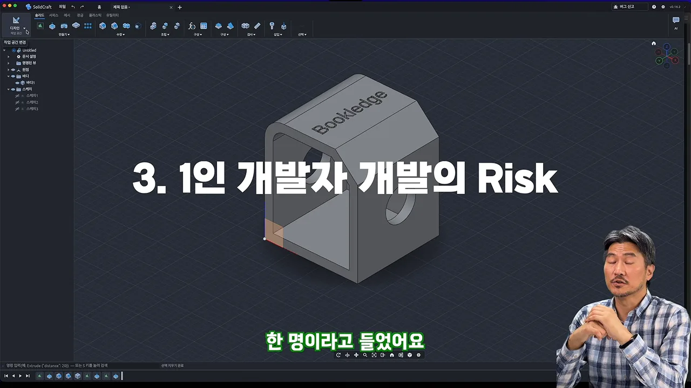
FreeCAD는 많은 개발자와 관심 있는 사람들이 모여 만들어 왔어요. 지금은 아이디어와 목표만 있으면 혼자서도 AI에게 시켜 이런 걸 만들 수 있어요. 대신 한 사람이 끌고 가는 프로젝트라, 그 사람이 흥미를 잃으면 업데이트가 멈출 수 있어요.
발표자는 이 걱정은 크지 않다고 봐요. 오픈소스이고 쓰려는 사람도 있으니, 누군가 받아서 이어 갈 거라는 거예요. 예전에는 남이 쌓은 코드 위에서 작업하는 게 부담스러웠지만, 이제는 AI에게 "이거 포크해서 더 만들어 줘"라고 하면 되니까요.
더 큰 문제는 따로 있어요. 누가 봐도 오토데스크 퓨전을 따라 만든 프로그램이라는 점이에요. AI가 인터페이스를 보고 비슷하게 구현한 것이지 코드를 그대로 복사한 건 아니라서, 똑같이 베꼈다고 할 수는 없어요. 그래도 법적으로 완전히 자유로울지, 오토데스크가 가만히 있을지는 알 수 없어요. 경우에 따라 금방 사라질 수도 있다는 게 발표자의 걱정이에요.
대신 고쳐지는 속도가 빨라요
버그나 빠진 기능은 크게 걱정하지 않아도 된다고 해요. 쓰다가 뭔가 안 되면 앱의 '버그 신고' 버튼을 누르면 돼요. 아래처럼 'Create issue' 창이 떠서, 스크린샷과 리포트를 복사해 GitHub에 바로 문제를 올릴 수 있어요. 오류가 나면 리포트가 자동으로 올라가는 기능도 있어요.
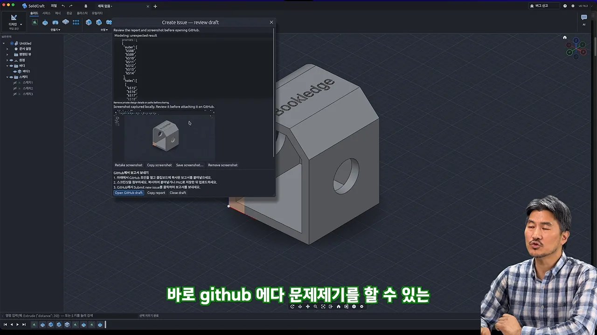
올리기가 쉬우니 GitHub 이슈 탭에는 900개가 넘는 이슈가 쌓였어요. 아래 목록은 FILLET, SHELL, CHAMFER 같은 기능 이름이 붙은 오류 보고로 채워져 있어요. 사용자들이 올린 이슈로 문제가 계속 풀린다는 게 큰 힘이라고 봐요.
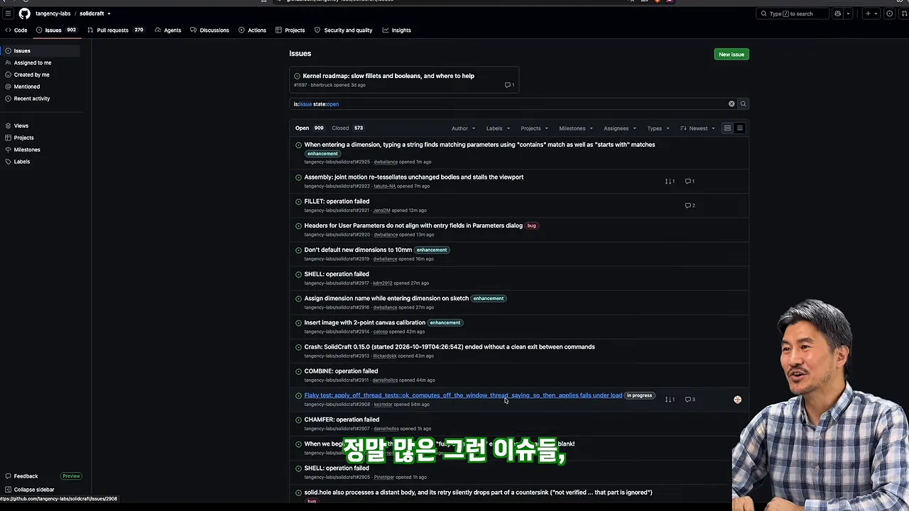
발표자가 가장 놀란 건 릴리스 노트였어요. 다음 페이지로 계속 넘기면 첫 버전이 나와요. 처음 이름은 SolveCraft였고, 0.1.0이 나온 게 지난주, 2주도 안 됐어요. 아래가 그 첫 릴리스의 'Known limitations'예요. 일부 필렛·챔퍼·불리언은 아직 실패하고, 서피스·도면·CAM(Computer-Aided Manufacturing)·메시·시뮬레이션은 당분간 범위 밖이라고 적혀 있어요. 맨 아래에는 MIT(Massachusetts Institute of Technology) 또는 Apache-2.0 라이선스이고, 클린룸 구현이며 오토데스크와 관계없다는 문장도 보여요.
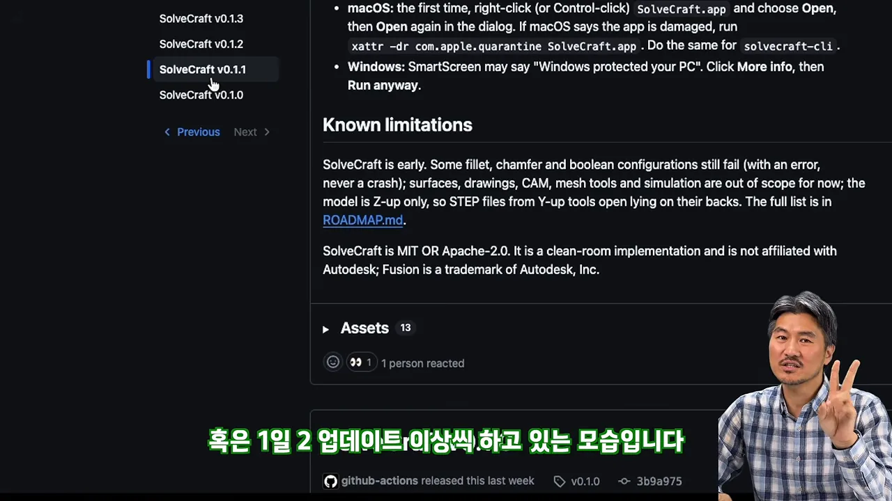
그 뒤로 거의 하루 한 번, 많으면 두 번 이상 업데이트가 나왔어요. 발표자가 처음 설치한 버전이 0.13.0이었는데, 설치한 지 3일 만에 업데이트가 여덟 번 있었어요. 사람이 붙어서 개발해서는 나오기 어려운 속도이고, AI가 하니까 가능하다고 봐요. 실제로 0.13에서 겪던 문제가 다음 버전에서 고쳐지는 일이 계속 있었대요. 2주 만에 이 정도니, 한두 달 뒤에는 완성도가 꽤 높아져 있을 거라는 기대도 덧붙여요.
이런 사람에게 추천해요
그럼 퓨전과 이렇게 닮은 SolidCraft를 누구에게 권할까요? 발표자는 다섯 부류를 꼽아요. 아래 화면이 그 목록을 한데 모은 장면이에요.
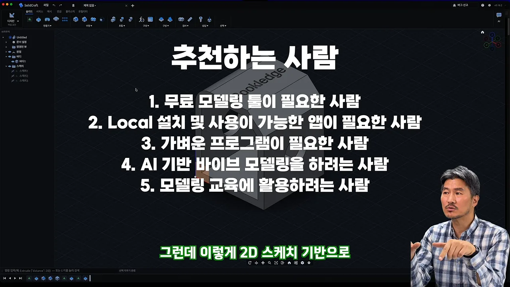
| 추천 대상 | SolidCraft가 좋은 점 | 발표자가 짚은 퓨전 쪽 사정 |
|---|---|---|
| 1. 무료 툴이 필요한 사람 | 오픈소스이고 무료예요 | 퓨전도 개인·비상업용은 무료 라이선스(발표자 설명으로 3년)가 있어서, 무료라는 이유만으로는 버그 없는 퓨전이 나을 수 있어요 |
| 2. 로컬에서 쓰려는 사람 | 클라우드 저장이 아예 없고, PC(Personal Computer)에 STEP(Standard for the Exchange of Product model data)·OBJ(Wavefront Object)·STL(Stereolithography)로 저장해요. 네트워크 없이도 바로 모델링해요 | 퓨전은 클라우드가 기본이라 로컬에 두려면 내보내기를 해야 해요. 오프라인 기능이 있지만 일정 기간까지예요 |
| 3. 가벼운 프로그램이 필요한 사람 | 약 400MB예요 | 기능과 AI가 계속 붙으면서 관련 폴더가 10GB를 넘었어요 |
| 4. AI로 모델링하려는 사람 | 처음부터 JSON 기반 'AI 네이티브'로 만들어졌어요 | 퓨전 MCP도 되지만 결과가 FreeCAD·SolidCraft보다 떨어졌어요. 내부가 공개되지 않아 연결이 느리거나 어려운 것 같다고 추측해요 |
| 5. 모델링 교육 | 파일이 작아 나눠 주거나 바로 받아 설치하면 끝나요 | 설치·회원 가입·클라우드 연결·허브 구성에 수업 첫 30분쯤이 들어요 |
1번에 대해 발표자는 공정하게 말해요. 지금은 버그도 있으니, 무료라는 점 하나만 보면 퓨전을 쓰는 게 나을 수 있다는 거예요. 그래서 진짜 이유는 2번부터예요.
2번은 오프라인 환경이에요. 퓨전에도 오프라인 사용 기능이 있어서 일정 기간은 와이파이 없이 쓸 수 있어요. 그러니 이것만으로 SolidCraft를 고를 필요는 없지만, 네트워크가 전혀 없는 곳에서 오래 써야 한다면 좋은 대안이 돼요.
3번은 발표자가 중요하다고 강조한 부분이에요. 퓨전은 원래 인벤터의 간단한 버전쯤으로 자리 잡았는데, 오토데스크가 미래를 걸고 키우면서 몸집이 커졌어요. 발표자는 솔리드 디자인 위주로만 쓰는데도, 자기 컴퓨터의 퓨전 관련 폴더가 10GB를 넘었어요.
저장 공간도 다 돈이니, 이걸 줄이는 것만으로도 매력이 있다고 해요.
4번은 AI 모델링이에요. 발표자는 화면 자막에서 이걸 '바이브 모델링'이라고 불러요. 툴 자체보다 AI로 모델링하는 게 목적이라면 FreeCAD MCP나 SolidCraft가 맞아요. SolidCraft는 아직 모델링 실력과 기능 오류가 있어서 당장은 FreeCAD가 조금 나을 수 있어요. 그래도 지금 같은 발전 속도라면 SolidCraft가 더 매력적인 소프트웨어가 될 거라고 봐요.
5번은 발표자 본인의 경험이에요. 학생과 입문자에게 퓨전으로 모델링을 가르치는데, 수업 첫 30분은 거의 설치에 쓴대요. 그동안은 그래서 팅커캐드처럼 도형을 붙이고 빼는 방식의 툴을 쓰기도 했는데, 설계 효율이 떨어진다고 봐요. 2D 스케치 기반이라 자유도가 높은 툴을 무료로 바로 깔아 쓸 수 있다는 것만으로 교육에 쓸 만하다고 해요.
AI 모델링과 설계자의 역할
AI 모델링을 소개하면 "그 정도로는 현업에서 못 쓴다", "AI가 무슨 대체냐, 아직 멀었다" 같은 댓글이 많이 달린대요. 발표자는 이걸 코딩처럼 봐야 한다고 말해요.
실리콘밸리 개발자들은 직접 타이핑해서 코딩하는 일이 거의 없을 만큼 줄었고, AI로 코딩하는 게 당연해졌어요. 모델링도 그렇게 가지 않을까 하는 거예요. 물론 도구에 하나 던져 주고 완성품을 기대하면 무리예요. 아직은 숙련된 설계자보다 한 수 아래일 수 있어요.
하지만 유능한 엔지니어가 AI에게 지시하며 코딩하면 코드 품질이 올라가듯, 실력 있는 설계자가 AI를 끼고 설계하면 설계 시간과 정확도, 리드타임이 크게 좋아질 거라고 봐요. 아래 화면은 영상 마지막에 비친 SolidCraft 홈이에요. 최근 파일에 AI로 만든 빨강·노랑 실기 모델들이 줄지어 있어요.
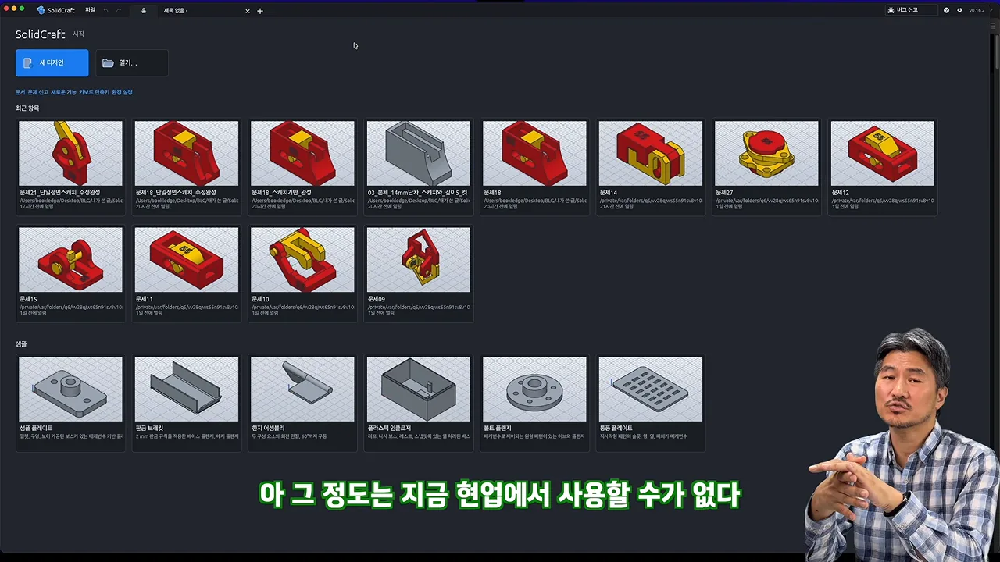
핵심은 지시하는 사람이에요. AI가 처음부터 끝까지 다 해 주진 않지만, 기구 메커니즘과 설계 요점을 확실히 아는 전문가가 AI를 잘 가르치고 지시하면, 신입을 뽑아 시키고 다시 해 오라고 하는 것보다 성과가 훨씬 좋을 거라고 해요.
고급 설계 능력자분들이 이런 AI를 끼고 어 설계를 한다면 설계 시간이라든지 정확도 리타임 이런 것들은 비약적으로 증가하지 않을까라는 생각이 듭니다.
— 영상 33:09
발표자는 AI가 산업 곳곳에 퍼지는 게 두렵기도 하고, 어떻게 써야 할지 고민도 된다고 털어놔요. 3D 프린팅 분야에서도 이 고민을 시청자와 함께 나누고 싶다며 영상을 마쳐요.